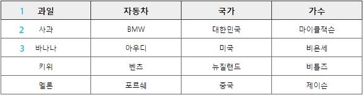
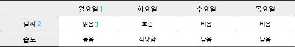
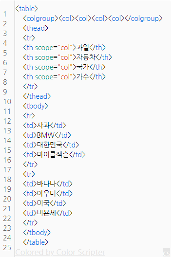

HTML Reference
HTML
HTML(HyperText Markup Language)은 웹 페이지를 만들기 위한 언어입니다.
- HT = HyperTEXT : 문서와 문서를 연결
- M = Markup : 마크업, 태그
- L = Language : 언어
- HTML이란? 문서와 문서로 연결된 태그 언어를 말합니다.
태그(Tag)
태그는 정보를 정의하는 방식을 의미합니다.
- 태그는 열린태그와 닫는태그가 있습니다.
- 닫는 태그는 "/" 있어야 합니다.
- 닫는 태그가 필요 없는 것도 있습니다.( <br>, <hr>, <img>, <input>, <meta> )
- HTML5에서는 "/"가 생략이 가능합니다.
불록 요소/인라인 요소(Block/Inline)
블록 요소는 박스, 인라인 요소는 텍스트를 의미합니다.
- 블록 엘리먼트(Block Element)
- 독립된 박스 영역으로, 한 줄에 하나에 블록 요소만 포현 할 수 있습니다.
- 블록요소에는 블록요소 인라인 요소를 포함 할 수 있습니다.
- <div>, <p>, <h1>, <h6>, <ul>, <li>
- 인라인 엘리먼트(Inline Element)
- 독립된 텍스트 영역으로, 한 줄에 여러개의 인라인 요소를 표현 할 수 있습니다.
- 인라인 요소에는 블록 요소가 포함 될 수 없지만, 인라인 요소는 포함 할 수 있습니다.
- <span>, <a>, <strong>, <em>, <img>

DTD (Document Type Declaration)
웹 페이지를 제작하기 위해서는 웹 문서 형식유형을 설정하여야 합니다.
- 독타입을 설정하지 않거나 잘못 설정하면 브라우저에 따라 화면이 다르게 나오거나 렌더링이 달라지기 때문에 독타입을 성정해야 합니다.
<!-- html5 --> <!DOCTYPE html> <!-- HTML 4.01 Strict --> <!DOCTYPE HTML PUBLIC "-//W3C//DTD HTML 4.01//EN" "http://www.w3.org/TR/html4/strict.dtd"> <!-- HTML 4.01 Transitional --> <!DOCTYPE HTML PUBLIC "-//W3C//DTD HTML 4.01 Transitional//EN" "http://www.w3.org/TR/html4/loose.dtd"> <!-- HTML 4.01 Frameset --> <!DOCTYPE HTML PUBLIC "-//W3C//DTD HTML 4.01 Frameset//EN" "http://www.w3.org/TR/html4/frameset.dtd"> <!-- XHTML 1.0 Strict --> <!DOCTYPE html PUBLIC "-//W3C//DTD XHTML 1.0 Strict//EN" "http://www.w3.org/TR/xhtml1/DTD/xhtml1-strict.dtd"> <!-- XHTML 1.0 Transitional --> <!DOCTYPE html PUBLIC "-//W3C//DTD XHTML 1.0 Transitional//EN" "http://www.w3.org/TR/xhtml1/DTD/xhtml1-transitional.dtd"> <!-- XHTML 1.0 Frameset --> <!DOCTYPE html PUBLIC "-//W3C//DTD XHTML 1.0 Frameset//EN" "http://www.w3.org/TR/xhtml1/DTD/xhtml1-frameset.dtd">
언어 속성 설정
컨텐츠의 언어를 인식하고 언어 정보를 추출하는데 사용합니다. 미리 언어를 설정하면 효율성이 더 좋아집니다.
<!-- html5 --> <html lang="ko"> <!-- html4 --> <html lang="ko" xml:lang="ko" xmlns= "http://www.w3.org/1999/xhtml">
문서 정보 설정
웹 문서의 필요한 정보를 제공합니다.
<!-- html5 언어설정 --> <meta charset="UTF-8"> <!-- html4 언어설정 --> <http-equiv="Content-Language" content="text/html; charset=UTF-8"> <!-- 웹 문서에 대한 저작자 설정 --> <meta name="author" content="webstoryboy"> <!-- 웹 문서에 대한 설명 설정 --> <meta name="description" content="사이트 설명"> <!-- 웹 문서에 대한 키워드 설정 --> <meta name="keywords" content="키워드">
HTML Description
<HTML>
HTML 문서의 최상위 루트를 나타냅니다.
<head>
HTML 문서의 헤더 요소를 정의하는 영역입니다.
<body>
HTML 문서의 본문에 해당하는 콘텐츠를 정의하는 영역입니다.
<meta>
문서의 대한 정보를 제공합니다.
<link>
문서를 외부 파일과 연결합니다.
<title>
문서의 제목을 설정합니다.
<h1>~<h6>
h1 – h6 요소는 6단계의 문서 제목을 구현합니다. 구획 단계는 h1 이 가장 높고 h6 은 가장 낮습니다.
<p>
p속성은 텍스트의 단락을 나타냅니다. 단락들은 블럭-레벨 요소 입니다.
<ul>
리스트에서의 순서가 의미없는, 숫자 순서를 가지고 있지 않은, 정렬되지 않은 항목들의 리스트를 나타냅니다.일반적으로, 정렬되지않은 리스트의 항목들은 굵은 점과 함께 표시됩니다.
<li>
리스트 항목을 나타낼때 사용됩니다. 이 요소는 자신이 리스트에서 하나의 개체를 나타내는 정렬된 리스트( ol ), 정렬되지 않은 리스트( ul ), 메뉴( menu ) 에 포함되어야 합니다.
<a>
하이퍼 링크를 정의합니다.
- href : 링크로 이동하는 경로를 설정합니다.
- target : 새로운 브라우저를 설정합니다.
- _self: 현재 페이지에서 이동합니다.
- _parent: 부모 프레임이 있다면 부모 페이지에서 이동합니다.
- _top: 최상위 페이지에서 이동합니다.
- _blank: 새로운 창(탭)에서 페이지가 열립니다.
- 방문하지 않은 링크는 밑줄과 파란색으로 표시됩니다.
- 방문한 링크는 밑줄과 보라색으로 표시됩니다.
- 활성화된 링크는 밑줄과 빨간색으로 표시됩니다.
- <a> 태그는 예외적으로 HTML5에서 블록요소를 포함할 수 있습니다.
strong
글자를 굵게 표시하여, 텍스트를 중요하게 보이고자 할 때 사용합니다.
- 사용 방법 : <storng>내용</strong>
em
emphasized text 즉 특정 텍스트를 강조하고자 할 때 사용합니다.
- 사용 방법 : <em>내용</em>
span
인라인 요소로 그것 자신만으로는 아무런 의미를 갖지 않습니다.
- class, lang, dir등의 전역속성과 함께 사용하면 유용합니다.
div
태그자체는 특별한 의미가 없으며 문서의 영역을 지정하는데 사용합니다.
- id속성이나 class속성을 이용하여 식별자를 지정한다. 이러한 식별자로 CSS를 적용합니다.
- 다른 적절한 요소가 없는 경우 마지막 방편으로 사용하기를 강력히 권장합니다. 그렇지 않으면 접근성을 어렵게 할뿐만 아니라 관리의 어려움을 겪게 됩니다. 즉 블로그 포스트는 article요소를, 챕터는 section요소를, 페이지 네비게이션은 nav요소를, 폼 컨트롤 그룹은 fieldset요소를 이용할 수 있습니다.
- 스타일링을 목적으로 한다던가 같은 섹션에 포함된 여러개의 문단을 묶어 비슷한 방법으로 주석을 달고자 할때 유용하게 사용할 수 있습니다.
address
연락처 정보를 나타냅니다
- 가장 가까운 상위의 <article>이나 <body>의 연락처 정보를 제공할 때 사용됩니다.
br
단락에서 텍스트를 강제로 줄바꿈 합니다.
- 시나 주소같이 실제 내용의 일부인 경우에만 사용합니다.
- 표현적 요소를 사용해서는 안됩니다.
- 문단을 구분하기 위해 <br />태그를 연속으로 사용하는 것은 바람직하지 않으며 <p>태그를 사용하도록 권장하고 있습니다.</li>
hr
문단레벨에서 주제의 분리를 나타냅니다 .
- 스토리 내에서 화면의 전환이나 참고서적의 섹션내에서 다른 주제로 전환 하고자할때 사용합니다. 즉 단락들 사이에 의미적 구분이 있을 때 사용됩니다.
- 보통 구분선으로 출력되며 스타일시트를 이용해 다양한 모양으로 대체할 수 있습니다.
table
1차원 이상의 데이터를 표의 형태로 나타냅니다.
레이아웃을 목적으로 사용해서는 안됩니다.
- table요소는 다음 요소를 포함하고 있습니다.
- tr : row (횡렬의 셀)로 정의
- th : column (종렬의 셀)으로 제목셀을 정의
- td : cell (표안의 항목)로 데이터셀을 정의
- caption : 표의 제목을 정의
- thead : 헤더행을 그룹화하여 정의
- tfoot : 푸터행을 그룹화하여 정의
- tbody : 본체행을 그룹화하여 정의
- col : 열의 속성값과 스타일을 위한 그룹화
- colgroup : 열의 구조적 그룹화. col요소를 포함할 수 있다.
input
폼 안에 기본적인 컨트롤을 생성합니다.
- type : 필수속성입니다. 다음은 타입속성에서 사용할 수 있는 값입니다.
- text : 단일행 텍스트 입력필드
- password : 비밀번호 입력필드. 감춰져서 출력된다.
- checkbox : 체크박스 생성. 복수 선택이 가능
- radio : 라디오버튼 생성. 복수 선택 불가능
- submit : 송신버튼 생성
- reset : 리셋버튼 생성
- button : 범용버튼 생성.
- image : 이미지버튼 생성
- file : 송신파일 선택필드 생성
- hidden : 감춰진 필드.
- name= “이름” (필수 속성) : 컨트롤의 이름 지정. type의 속성이 checkbox나 radio일 경우 name속성이 같은 값으로 지정되면 하나의 그룹으로 취급한다.
- value= “값” : 컨트롤 종류에 따른 초기값 지정
- size= “폭” : 컨트롤의 폭을 지정. type속성이 text이거나 password일 경우 문자수를 지정하고 그외의 경우에는 가로폭의 픽셀값을 지정한다.
- width : 요소의 가로사이즈를 지정합니다.
- height : 요소의 높이를 지정합니다.
- max : input요소에 허용하는 값의 최대값을 지정합니다.
- maxlength= “최대 입력 문자수” : type속성이 text이거나 password일 경우 최대 입력 문자수를 지정한다.
- min : input요소에 허용하는 값의 최소값을 지정합니다.
legend
fieldset요소를 이용하여 그룹화한 범위의 캡션을 지정할 수 있습니다.
- 함께 알아야 할 태그 : fieldset
fieldset
여러개의 컨트롤과 라벨을 그룹화합니다.
- 속성
- disabled : fildset요소의 첫번째 legend요소의 자손 요소를 제외한 모든 자식 요소들을 비활성화 시킵니다
- form : 다른 폼 소유자와 명시적으로 연관시키기위해 사용됩니다.
- name : 요소의 이름을 지정합니다.
- 설명
- legend요소를 이용하여 캡션을 부여할 수 있습니다.
- 중첩하여 사용할 수도 있습니다.
- 함께 알아야 할 태그 : legend
form
웹페이지가 상호작용할 수 있게 하기 위한 form의 최상위 요소로 그 범위를 정의합니다.
- action= “URI” : form의 필수 속성으로 필드의 내용을 처리하는 프로그램의 URI를 지정합니다.
- method= “HTTP메소드” : 폼의 내용을 처리하는 방법을 지정합니다. (post:폼의 본문으로 송신, get : action 에서 지정한 URI에 폼의 내용을 ‘?’ 으로 구분으로 추가하여 송신)
- name= “식별자” : 링크나 스크립트로부터 이 폼을 참조할 수 있게 식별자를 지정합니다. (XHTML 1.0 Strict, XHTML 1.1에서는 id속성으로 지정)
section
일반적으로 문서의 콘텐츠 섹션을 의미합니다.
- 콘텐츠와 관련된 한가지 주제 영역을 말합니다.
- section 요소는 문장이나 문서의 스타일링 요소가 아니기 떄문에 편의나 영역을 위함이면 div 태그가 좋습니다.
- section 요소는 제목이 없는 경우는 섹션이라고 할 수 없기 때문에 제목을 제공해야 합니다.
- section 요소는 일반적인 주제가 아니라면 구체적인 요소(article, aside, nav)를 사용하는 것이 더 적절합니다.
article
콘텐츠의 독립적인 항목을 나타내는 콘텐츠를 의미합니다.
- article는 포럼, 신문기사, 잡지, 블러그 항목, 게시판 글 등은 콘텐츠의 독립적인 항목을 나타냅니다.
- section은 하나의 주제를 나타낸다면, article은 주제를 묶은 독립적인 콘텐츠입니다.
- section 요소 안에는 article 요소를 쓸 수 있으며, article 요소 안에도 section 요소를 쓸 수 있습니다.
nav
페이지 내에서 이동할 수 있는 네비게이션 링크 그룹입니다.
- nav는 문서의 핵심적인 페이지의 메뉴 및 서브메뉴에서 사용하고, 문서에서 주로 한 번 사용합니다.
- 문서 안에 링크가 포함된 콘텐츠는 nav를 사용하지 않습니다.
- nav는 핵심적인 네비게이션에 사용해야 하므로, 푸터 내에 링크 그룹의 사용은 적절하지 않습니다.
main
웹 문서의 주요 콘텐츠 영역을 나타낼 때 사용합니다.
- main은 웹 페이지에서 한 번만 사용할 수 있으며, 접근성과 검색 영역에 노출을 향상시킵니다.
- article, aside, footer, header, nav를 하위 요소로 사용할 수 있습니다.
aside
웹 문서의 메인 콘텐츠와 관련된 사이트 콘텐츠 영역을 나타냅니다.
- aside는 메인 콘텐츠와 관련된 사이드의 정보, 광고 등 부분적인 정보를 그룹화할 때 사용합니다.
header
웹 문서의 헤더 영역을 나타냅니다.
- 헤더에는 웹 페이지에 대한 소개, 네비게이션 영역, 테이블 영역, 검색 영역, 로고 영역을 포함한 영역입니다.
- 헤어에는 제목 태그가 포함될 수 있으며, 필수 조건은 아닙니다.
- header는 섹션 콘텐츠가 아닌 그룹화하기 위한 요소이므로 section 요소를 포함할 수 없습니다.
footer
웹 문서의 푸터 영역을 나타냅니다.
- footer는 저작권 정보, 회사 정보, 관련 링크, 주소, 바닥글, 사이트 정보 등을 포함하는 콘텐츠 영역입니다.
- footer는 섹션 콘텐츠가 아닌 그룹을 나타내는 요소이며, section, article, aside 등을 포함할 수 있습니다.
HTML5에서 새로 생긴 태그
- article : 문서의 기사를 정의
- bdi : 다른 텍스트와는 다른 방향으로 포맷 할 수있는 텍스트의 일부를 정의
- details : 사용자가 보거나 숨길 수있는 추가 정보를 정의합니다
- dialog : 대화 상자 또는 창을 정의
- figcaption : A에 대한 자막을 정의 figure 요소
- figure : 등 그림, 도표, 사진, 코드 목록, 같은 자체에 포함 된 내용을 정의합니다
- footer : 문서 또는 섹션 바닥 글을 정의
- header : 문서 또는 섹션 헤더를 정의합니다
- main : 문서의 주요 내용을 정의
- mark : 표시 또는 텍스트를 강조 정의합니다
- menuitem : 사용자가 팝업 메뉴에서 호출 할 수있는 명령 / 메뉴 항목을 정의합니다
- meter : 공지 범위 스칼라 측정을 정의
- nav : 문서의 탐색 링크를 정의
- progress : 작업의 진행 상황을 정의
- rp : 지원하지 않는 브라우저에 표시 할 것을 정의 ruby 주석을
- rt : 문자에 대한 설명 / 발음을 정의합니다
- ruby : 정의 ruby 주석을 (for East Asian typography)
- keygen : 키 쌍 생성기 필드를 정의 (for forms)
- output : 계산 결과를 정의
html5에서 의미가 변한 태그
- HTML5의 DTD 선영 : !DOCTYPE html
- HTML5의 인코딩 선언 : meta charset="urf-8"
- s : 더이상 옳지 않은 내용을 나타내는 데에 쓴다. 별도의 CSS 없이 쓰면 브라우저에서는 취소선을 긋는 것이 기본값이다.
- u : 양식상 일반적인 텍스트보다 돋보여야 할때 쓴다. 예를 들어 철자가 틀린 단어나, 중국어로 번역된 고유 명사 등이 있다. 별도의 CSS 없이 쓰면 브라우저에서는 밑줄을 긋는 것이 기본값이다.
- i : 어떠한 이유로 일반적인 텍스트보다 돋보여야 할때 쓴다. 예를 들어 전문 용어, 외국어의 구절 등이 있다. 별도의 CSS 없이 쓰면 브라우저에서는 이탤릭체로 표기하는 것이 기본값이다. 더 적절한 시맨틱 태그가 있을 경우 그쪽을 쓴다.
- hr : 원래 단순한 가로줄을 나타내는 태그였으나, 페이지의 주제가 바뀔 때 내용을 분리시키는 의미가 HTML5에서 추가되었다.
html5에서 없어진 태그
- basefont
- big
- center
- font
- s
- strike
- tt
- u
- frame
- framesets
- noframes
- acronym
- applet
- isindex
- dir
table 속성
- thead, tbody, tfoot
- 여러개의 행을 하나의 그룹으로 묶어주는 엘리먼트 입니다. 테이블 안에서 이 3개의 태그는 사용이 제한이 있는데 thead와 tfoot는 한 테이블에서 하나만 작성을 할 수가 있습니다. 하지만 tbody의 경우는 여러번 사용해도 무방합니다.
header 의th 태그를 적용하면 글자가 bold체로 굵게 표시되고 가운데 정렬을 하게 됩니다. - summary
- 표의 목적이나, 음성, 점자등 보이지 않는 메디아 표현의 구조를 제공합니다. 해당 테이블의 내용이 뭔지를 축약적으로 나타낼 수 있습니다. 이미지 태그의 alt 속성과 같다고 할 수 있습니다.
- caption (닫는 태그 필요)
- 테이블의 열이나 행 앞에 header나 caption을 넣어 줄때 사용합니다. caption태그는 반드시 table태그 블록에 포함 되어야 합니다. default 정렬방식은 중앙정렬 입니다.
- 속성
- ① align = top, left, right, bottom
- top : 행의 상단에 배치
- left : 문자열을 왼쪽에 정렬
- right : 문자열을 오른쪽에 정렬
- bottom : 행의 하단에 배치
- ② class : css의 class 선택자를 지정합니다.
- ③ id : css의 id 선택자를 지정합니다.
- ④ style : css스타일을 지정합니다.
- 속성
- colgroup (닫는 태그 선택적)
- 표의 세로줄 그룹을 만들때 사용합니다. table요소내에서 caption뒤 thead 앞에 위치 해야 합니다.
- 속성
- ① class : css의 class 선택자를 지정 합니다.
- ② id : css의 id 선택자를 지정합니다.
- ③ style : css 스타일을 지정합니다.(적용할 수 있는 스타일은 border, background, width 입니다.)
- ④ span : 그룹화할 세로줄의 개수를 지정합니다.
- ⑤ width : 세로줄 그룹의 너비를 지정합니다.
- ⑥ align = top, left, right, bottom, center (ie에서만 적용됩니다. 구글이나 파이어폭스에서 적용안됨)
- 속성
- col (닫는 태그 없음)
- 표의 세로줄을 지정할때 사용합니다. table요소내에서 caption뒤 thead 앞에 위치 해야 합니다. colgroup과 달리 col은 세로줄을 구조적으로 그룹핑하지 않으며 단순히 하나 이상 세로줄에 공통적인 속성을 정의 합니다. col요소는 table요소 안에 바로 포함되거나 colgroup 안에 포함될 수 있습니다. col요소가 colgroup안에 있을때 col속성은 colgroup속성보다 우선합니다.
- 속성
- ① class : css의 class 선택자를 지정 합니다.
- ② id : css의 id 선택자를 지정합니다.
- ③ style : css 스타일을 지정합니다. (적용할 수 있는 스타일은 border, background, width 입니다.)
- ④ width : 디폴트 값은 픽셀입니다. %로도 사용이 가능합니다.
- ⑤ span : 그룹화할 가로줄의 개수를 지정합니다.
- 속성
- scope
- 데이터의 header 정보를 제공합니다
- col : 그 열의 header의 정보를 제공합니다.
- row : 그 행의 header의 정보를 제공합니다.
- abbr (헤더의 요약)
- 스크린리더가 테이블의 내용을 읽어 내려갈때 테이블의 내용(td) 보다는 상단header(th)부분부터 읽게 될 것입니다. 만약 이때 헤더(th) 내용이 길게 들어가면 스크린리더가 행을 읽을때마다 헤더의 내용을 계속 반복해서 읽게 될 것입니다. abbr속성은 이렇게 길게 들어가 있는 헤더의 내용을 단축해서 표현해주는 역활을 합니다.
Table의 scope (col / row)
시각 장애인을 위한 테이블 속성의 웹접근성
- scope는 th에 사용하는 속성으로, 제목과 내용을 연결해주는 기능을 갖고 있습니다.
- 예① : 과일에(th) scope="col" 이라고 적용하고 과일이라는 제목셀부터 사과, 바나나 순으로 읽으라는 뜻입니다. 
- 예② : 월요일(th)에 scope="col"을 적용하고 날씨(th)에 scope="row"라고 적용하면 월요일 - 날씨 - 맑음 순으로 읽으라는 뜻입니다. 
